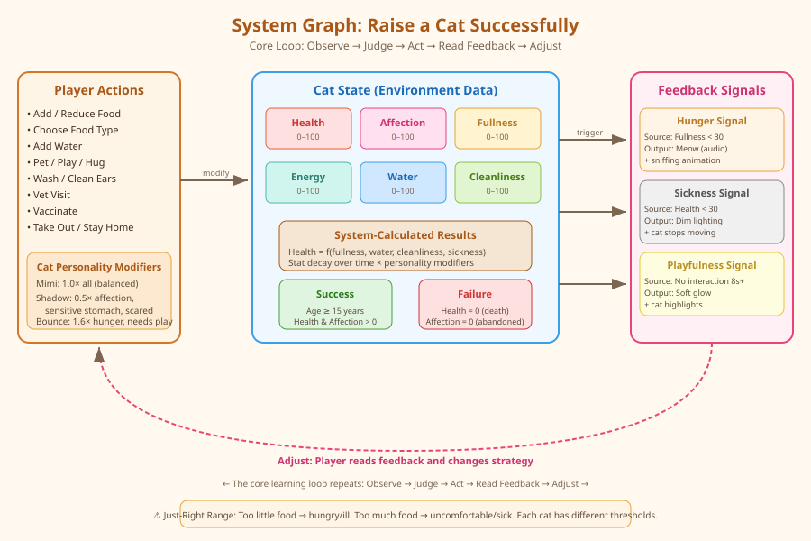

I have four cats at home, and one of them was discovered homeless on the street. It's really difficult to keep pets healthy, especially when raising a previously homeless cat — it depends on various factors like feeding, caring, medical examining, and illness preventing.
In the game, players must observe each cat's stats and behavior, judge what the cat needs, act by choosing the right care action, read feedback from the cat's reactions, and adjust their strategy. Different cat personalities require different approaches — exactly like real pet keeping.
The diagram below shows how player actions, cat stats, and feedback connect in the game system:

| Variable | Range | Description |
|---|---|---|
| Fullness | 0–100 | Hunger level. Too low = hungry, too high = uncomfortable/overweight. |
| Health | 0–100 | Physical condition. Drops from neglect, poor food, sickness. 0 = death. |
| Affection | 0–100 | Bond with owner. Increases through proper interaction. 0 = cat runs away. |
| Energy | 0–100 | Activity level. Decreases with play, restored by sleep. |
| Cleanliness | 0–100 | Hygiene. Decreases over time, restored by washing. |
| Water | 0–100 | Hydration. Decreases over time. Essential for survival. |
| Age | years | Increases over time. Success = reach 15+ years. |
| Action | Effect |
|---|---|
| Add Food / Reduce Food | Adjusts food amount in bowl. Choose food type: Dry, Wet, or Special Diet. |
| Add Water | Refills the water bowl. |
| Pet / Play / Hug | Interaction that increases affection. Play also uses energy. |
| Wash / Clean Ears | Restores cleanliness. Washing slightly reduces affection (cats dislike water). |
| Vet Visit | Significantly restores health. Use when cat is sick. |
| Vaccinate | Preventive health boost. Increases illness resistance. |
| Take Out / Stay Home | Take the cat outdoors (boosts affection, but gets dirty) or keep it inside. |
Stats change over time based on the cat's personality and player actions. Health is calculated from other stats — if fullness, water, or cleanliness drop too low, health degrades. If the cat is well-fed, hydrated, and clean, health slowly recovers.
| Signal | Source Data | Player Feedback |
|---|---|---|
| Hunger Signal | Fullness < 30 | Cat meows (audio) and shows "hungry" animation. Affection decreases if ignored. |
| Sickness Signal | Health < 30 | Room light dims (visual). Cat stops moving and stays silent. Urgent vet visit needed. |
| Playfulness Signal | No interaction for 8+ seconds | Soft glow highlights the cat. Signals the cat wants attention. Boosts affection when addressed. |
| Condition | Trigger |
|---|---|
| Success | Cat reaches age 15 years with health > 0 and affection > 0. |
| Failure — Death | Health drops to 0 (from illness, hunger, or dehydration). |
| Failure — Abandoned | Affection drops to 0 (cat feels neglected and runs away). |
Too little food: the cat grows hungry easily and risks poor health.
Too much food: the cat feels uncomfortable and may get ill.
The player must find and maintain the right balance for each cat.
Each preset changes system variables and relationships, not just visual decoration:
| State Pair | Low Extreme | High Extreme |
|---|---|---|
| Hunger | Hungry (fullness low) | Full (fullness high) |
| Energy | Depressed (energy low) | Energetic (energy high) |
| Health | Sick (health low) | Healthy (health high) |
| Affection | Distant (affection low) | Affectionate (affection high) |